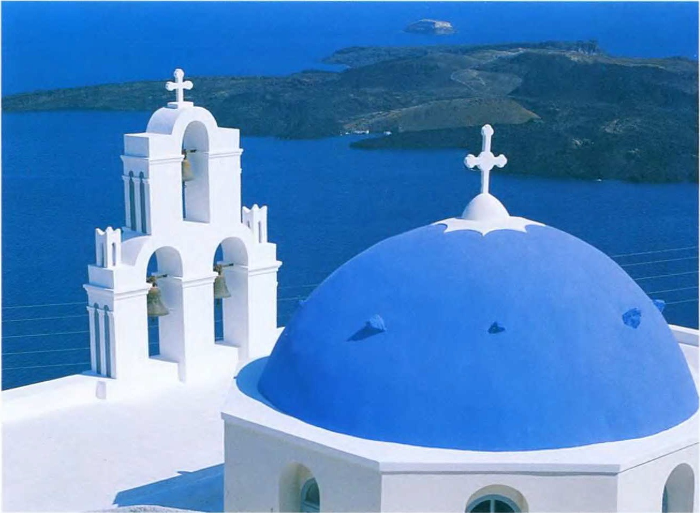

- В Греции есть область, в которую не допускаются женщины и дети. Это гора Афон, где живут православные монахи.
- С 1979 года Афины практически все время погружены в смог — нефос.
- Традиция Олимпийских игр восходит к 776 году до н.э. В период античности они проводились раз в четыре года в Олимпии — священном городе на западе Пелопоннеса.
ГРЕЦИЯ
Погибшая Атлантида

Остров Сифнос — одно из самых красивых мест архипелага Киклады. На юге Киклад находятся острова — остатки огромного вулкана, взорвавшегося около 3500 лет назад. Полагают, что именно здесь располагалась знаменитая Платонова Атлантида. Извержение не только уничтожило ее, но и вызвало цунами, вероятно ставшее причиной гибели минойской цивилизации на Крите. Вулканическая активность здесь продолжается и по сей день.
СЛОМАННАЯ КОЛЫБЕЛЬ
Греция гордится своей историей, насчитывающей не одно тысячелетие и наполненной мифами и легендами. Однако времена величия остались в далеком прошлом. Сегодня это небогатая страна на юге Европы, страдающая от постоянной политической нестабильности.
- Монастыри Метеоры.
- Афинский Акрополь.
- Город Дельфы.
- Архипелаг Киклады.
- Острова Патмос, Родос, Крит и Корфу.
- Мыс Сунион — самая южная точка Европы.
- Периферия Пелопоннес (города Микены, Эпидавр, Олимпия, Мистра).
- Форма правления: парламентская республика.
- Столица: Афины (3,3 млн жителей, включая пригороды).
- Крупнейшие города: Кавалэ, Коринф, Ираклион, Патры, Салоники.
- Денежная единица: евро
- Религия: 98% населения — члены Элладской православной церкви, около 1% — исповедуют ислам.
- Язык: новогреческий
Средиземноморский на юге — с теплым, сухим летом и мягкой зимой. Сухая, суровая зима на севере. Средняя температура в Афинах — +10.5*С в январе; +28*С в июле.
Греция по праву считается колыбелью европейской цивилизации. Уже в VIII веке до н.э. на базе языковой общности разных племен появилась греческая письменность. Исследования древнегреческих ученых легли в основу большинства точных и естественных наук, многие философские труды не потеряли актуальности и сегодня. Искусство Древней Эллады вдохновляло деятелей Возрождения, положивших начало современной культуре. Но период расцвета сменили времена упадка. Не способные договориться между собой, греческие полисы не могли противостоять захватчикам. Политическая независимость Греции была утрачена на многие столетия. Одна только турецкая оккупация длилась с 1456 по 1821 год. И лишь в 1829 году греки наконец обрели государственный суверенитет. Впрочем, стабильности это не принесло. Так, весь XX век в стране прошел под знаком противостояния социалистов и правых партий, не прекращавшегося даже в годы фашистской оккупации. После гражданской войны (1946-1949) и череды консервативных правительств в 1963 году к власти пришел центрист Георгиос Папандреу. Следующие выборы, состоявшиеся 21 апреля 1967 года, он тоже выиграл, однако был смещен военной хунтой — «черными полковниками». Период военной диктатуры и жестоких репрессий продолжался до 1974 года, когда неудачная попытка устроить путч на Кипре вынудила «полковников» отдать власть. В стране снова установилась демократия. В 1981 году Греция была принята в Европейский Союз. В том же году победу на выборах одержала партия «Всегреческое социалистическое движение» (ПАСОК) под руководством Андреаса Папандреу. Нынешний президент Карлос Папульяс, избранный в 2005 году, также принадлежит к этой партии. Однако беспорядки, вспыхнувшие в конце 2008 года, после того как от случайной пули полицейского погиб подросток-анархист, показывают, что до гражданского мира в Греции еще далеко.
- Площадь: 131 957 км2
- Население: 10,964 млн (98,5% — греки; меньшинства: турки, албанцы, армяне, болгары).
- Самая высокая точка: гора Олимп (2918 м).
- Побережье: 15 020 км.
Горнорудная промышленность: бурый уголь, бокситы, никелевые руды, нефть, газ.
Сельское хозяйство:выращивание оливок, табака, хлопка; виноделие, производство шерсти.
Крупнейший в мире торговый флот.
Туризм.
ТУРИСТИЧЕСКИЙ РАЙ
Лежащая между горами и морем с многочисленными островами, Греция похожа на каприз природы. Если верить легенде, она — плод любви Деметры, богини земледелия, и Посейдона, бога моря.
Греция занимает южную часть Балканского полуострова. Большинство заливов глубоко врезаются в берег. Коринфский залив почти отделяет полуостров Пелопоннес от континента — их соединяет только узенькая полоска земли. В 1893 году через этот перешеек был проложен канал. Греции принадлежат 1300 островов, из которых обитаемы только 250. Сочетание белых известняковых скал и омывающих их волн темно-синего моря представляет неповторимую картину. Природные и исторические памятники, а также знаменитая кухня привлекают в Грецию множество туристов со всего света. Туристическая индустрия составляет около 10% экономики страны. В 1952 году «страну богов» посетили 52 тысячи туристов, в 1969 году их число впервые достигло миллиона, а в 2007 году в Греции провели свой отпуск почти 17 млн человек. Ежегодно в Греции продается 2 млн входных билетов в Акрополь, а 700 тысяч человек посещают дворец царя Миноса на острове Крит. Однако в этом краю солнца и туристов можно увидеть не только античные развалины и белоснежные пляжи. Греция — это еще и бедные деревушки в горах Пелопоннеса, это смог, желтой дымкой окутывающий Афины. Греция — это жители рыбацких деревень, которые, несмотря на промышленный прогресс и толпы туристов, отказываются изменить привычный размеренный образ жизни.